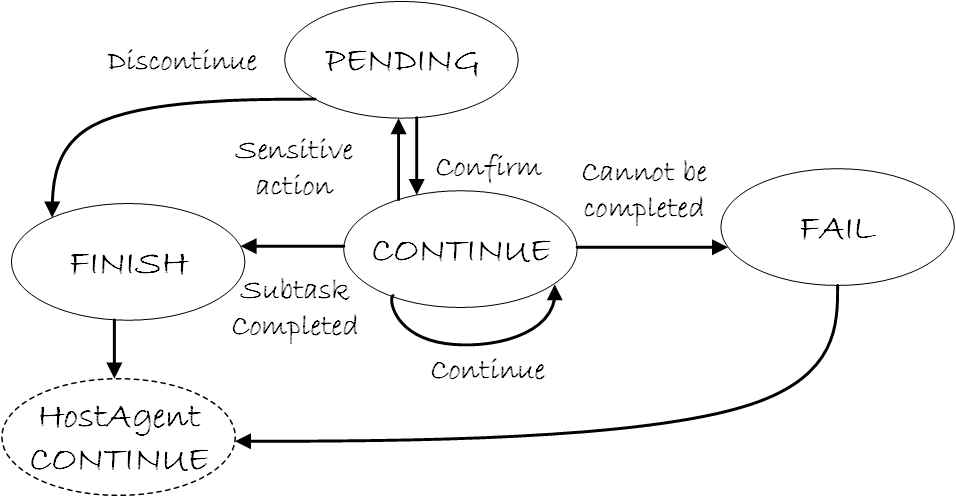

AppAgent State Machine
AppAgent uses a 7-state finite state machine (FSM) to control execution flow within a specific Windows application. The state machine manages subtask execution, UI re-annotation, user confirmations, error handling, and handoff back to HostAgent.
State Overview
AppAgent implements a robust 7-state FSM defined in ufo/agents/states/app_agent_state.py:
State Enumeration
class AppAgentStatus(Enum):
"""Store the status of the app agent."""
CONTINUE = "CONTINUE" # Main execution state
SCREENSHOT = "SCREENSHOT" # Re-annotation state
FINISH = "FINISH" # Subtask completed successfully
FAIL = "FAIL" # Subtask failed but recoverable
PENDING = "PENDING" # Awaiting user input
CONFIRM = "CONFIRM" # Safety confirmation required
ERROR = "ERROR" # Critical failure
| State | Purpose | Processor Executed | Subtask Ends | Returns to HostAgent |
|---|---|---|---|---|
| CONTINUE | Main execution - interact with app controls | ✅ Yes (4 phases) | ❌ No | ❌ No |
| SCREENSHOT | Re-capture and re-annotate UI after changes | ✅ Yes (4 phases) | ❌ No | ❌ No |
| FINISH | Subtask completed successfully | ❌ No | ✅ Yes | ✅ Yes |
| FAIL | Subtask failed but can be retried | ❌ No | ✅ Yes | ✅ Yes |
| PENDING | Await user input for clarification | ✅ Yes (ask user) | ❌ No | ❌ No |
| CONFIRM | Request user approval for safety-critical action | ✅ Yes (present dialog) | ❌ No | ❌ No |
| ERROR | Unhandled exception or critical failure | ❌ No | ✅ Yes | ✅ Yes |
State Definitions
CONTINUE State
Purpose: Main execution state where AppAgent iteratively interacts with the application.
@AppAgentStateManager.register
class ContinueAppAgentState(AppAgentState):
"""The class for the continue app agent state."""
async def handle(
self, agent: "AppAgent", context: Optional["Context"] = None
) -> None:
"""
Handle the agent for the current step.
:param agent: The agent for the current step.
:param context: The context for the agent and session.
"""
await agent.process(context)
def is_subtask_end(self) -> bool:
"""Check if the subtask ends."""
return False
@classmethod
def name(cls) -> str:
"""The class name of the state."""
return AppAgentStatus.CONTINUE.value
| Property | Value |
|---|---|
| Type | Execution |
| Processor Executed | ✓ Yes (4-phase pipeline) |
| Subtask Ends | No |
| Round Ends | No |
| Next States | CONTINUE / SCREENSHOT / FINISH / PENDING / CONFIRM / ERROR |
Behavior:
- Executes 4-phase processing pipeline (DATA_COLLECTION → LLM_INTERACTION → ACTION_EXECUTION → MEMORY_UPDATE)
- LLM analyzes UI and selects control to interact with
- Executes action on selected control
- Records action in memory and Blackboard
- Transitions based on LLM's
Statusfield in response
Example Flow:
CONTINUE → Capture UI → LLM selects "Export [12]" → Click control 12
→ LLM returns Status: "SCREENSHOT" → Transition to SCREENSHOT
CONTINUE is the primary execution state where AppAgent spends most of its time during subtask execution.
SCREENSHOT State
Purpose: Re-capture and re-annotate UI after control interactions that change the interface.
@AppAgentStateManager.register
class ScreenshotAppAgentState(ContinueAppAgentState):
"""The class for the screenshot app agent state."""
@classmethod
def name(cls) -> str:
"""The class name of the state."""
return AppAgentStatus.SCREENSHOT.value
def next_state(self, agent: BasicAgent) -> AgentState:
"""Determine next state based on control_reannotate."""
agent_processor = agent.processor
if agent_processor is None:
agent.status = AppAgentStatus.CONTINUE.value
return ContinueAppAgentState()
control_reannotate = agent_processor.control_reannotate
if control_reannotate is None or len(control_reannotate) == 0:
agent.status = AppAgentStatus.CONTINUE.value
return ContinueAppAgentState()
else:
return super().next_state(agent)
def is_subtask_end(self) -> bool:
"""Check if the subtask ends."""
return False
| Property | Value |
|---|---|
| Type | Execution |
| Processor Executed | ✓ Yes (same as CONTINUE) |
| Subtask Ends | No |
| Duration | Single re-annotation cycle |
| Next States | SCREENSHOT (if controls need re-annotation) / CONTINUE (if complete) |
Behavior:
- Inherits from
ContinueAppAgentState- executes same 4-phase pipeline - Re-captures screenshot after UI changes (dialog opened, menu expanded, etc.)
- Re-detects and re-annotates controls with updated labels
- Checks
control_reannotateto determine if more re-annotation needed - Transitions to CONTINUE once UI stabilizes
When to Use:
- LLM sets
Status: "SCREENSHOT"when it expects UI changes - After clicking buttons that open dialogs
- After expanding dropdown menus or combo boxes
- After any action that significantly alters the UI
Screenshot Example:
Action: Click "Export" button [12]
→ Dialog opens with new controls
→ LLM sets Status: "SCREENSHOT"
→ SCREENSHOT state re-annotates dialog controls as [1], [2], [3]...
→ Transitions to CONTINUE with fresh annotations
FINISH State
Purpose: Subtask completed successfully - archive results and return control to HostAgent.
@AppAgentStateManager.register
class FinishAppAgentState(AppAgentState):
"""The class for the finish app agent state."""
async def handle(
self, agent: "AppAgent", context: Optional["Context"] = None
) -> None:
"""Archive subtask result."""
if agent.processor:
result = agent.processor.processing_context.get_local("result")
else:
result = None
await self.archive_subtask(context, result)
def next_agent(self, agent: "AppAgent") -> HostAgent:
"""Get the agent for the next step."""
return agent.host
def next_state(self, agent: "AppAgent") -> HostAgentState:
"""Get the next state of the agent."""
if agent.mode == "follower":
return FinishHostAgentState()
else:
return ContinueHostAgentState()
FINISH indicates successful completion. The subtask result is available in the Blackboard for HostAgent to access and use in subsequent orchestration decisions.
def is_subtask_end(self) -> bool:
"""Check if the subtask ends."""
return True
@classmethod
def name(cls) -> str:
"""The class name of the state."""
return AppAgentStatus.FINISH.value
| Property | Value |
|----------|-------|
| **Type** | Terminal |
| **Processor Executed** | ✗ No |
| **Subtask Ends** | ✓ Yes |
| **Round Ends** | No (HostAgent continues) |
| **Next Agent** | HostAgent |
| **Next States** | HostAgent.CONTINUE (normal) / HostAgent.FINISH (follower mode) |
**Behavior**:
- Archives subtask to `previous_subtasks` with status and result
- Writes execution results to Blackboard for HostAgent
- Returns control to HostAgent
- HostAgent determines next action (new subtask, finish, etc.)
**Transition Logic**:python
In LLM response
{ "Status": "FINISH", "Comment": "Table data successfully extracted and saved" }
Next agent and state
next_agent = agent.host # HostAgent next_state = ContinueHostAgentState() # HostAgent continues orchestration ```
Subtask Completion
FINISH indicates successful completion. The subtask result is available in the Blackboard for HostAgent to access and use in subsequent orchestration decisions.
PENDING State
Purpose: Await user input to clarify ambiguous situations or provide additional information.
@AppAgentStateManager.register
class PendingAppAgentState(AppAgentState):
"""The class for the pending app agent state."""
async def handle(
self, agent: "AppAgent", context: Optional["Context"] = None
) -> None:
"""Ask the user questions to help the agent proceed."""
agent.process_asker(ask_user=ufo_config.system.ask_question)
def next_state(self, agent: AppAgent) -> AppAgentState:
"""Get the next state of the agent."""
agent.status = AppAgentStatus.CONTINUE.value
return ContinueAppAgentState()
def is_subtask_end(self) -> bool:
"""Check if the subtask ends."""
return False
@classmethod
def name(cls) -> str:
"""The class name of the state."""
return AppAgentStatus.PENDING.value
| Property | Value |
|---|---|
| Type | Interaction |
| Processor Executed | ✓ Yes (ask user) |
| Subtask Ends | No |
| Duration | Until user responds |
| Next States | CONTINUE (user provided input) |
Behavior:
- Displays question to user via
process_asker - Waits for user response (configurable via
ask_questionsetting) - User input is added to context for next CONTINUE execution
- Always transitions to CONTINUE after user responds
Use Cases:
- Ambiguous control selection: "Which 'Export' button should I click?"
- Missing information: "What filename should I use for the export?"
- Clarification needed: "Should I overwrite the existing file?"
Configuration Required
Set system.ask_question = true in configuration to enable PENDING state user interaction. If disabled, the agent will skip asking and make a best-effort decision.
CONFIRM State
Purpose: Request user approval before executing safety-critical or irreversible actions.
@AppAgentStateManager.register
class ConfirmAppAgentState(AppAgentState):
"""The class for the confirm app agent state."""
def __init__(self) -> None:
"""Initialize the confirm state."""
self._confirm = None
async def handle(
self, agent: "AppAgent", context: Optional["Context"] = None
) -> None:
"""Request user confirmation for the action."""
# If safe guard disabled, proceed automatically
if not ufo_config.system.safe_guard:
await agent.process_resume()
self._confirm = True
return
# Ask user for confirmation
self._confirm = agent.process_confirmation()
# If user confirms, resume the task
if self._confirm:
await agent.process_resume()
def next_state(self, agent: AppAgent) -> AppAgentState:
"""Get the next state based on user decision."""
if self._confirm:
agent.status = AppAgentStatus.CONTINUE.value
return ContinueAppAgentState()
else:
agent.status = AppAgentStatus.FINISH.value
return FinishAppAgentState()
def is_subtask_end(self) -> bool:
"""Check if the subtask ends."""
return False
@classmethod
def name(cls) -> str:
"""The class name of the state."""
return AppAgentStatus.CONFIRM.value
| Property | Value |
|---|---|
| Type | Interaction |
| Processor Executed | ✓ Yes (present confirmation) |
| Subtask Ends | No |
| Duration | Until user approves/rejects |
| Next States | CONTINUE (approved) / FINISH (rejected) |
Behavior:
- Presents action for user approval via
process_confirmation - Waits for user decision (approve/reject)
- If approved: Resumes processing via
process_resume→ CONTINUE - If rejected: Archives subtask → FINISH
- Bypassed if
safe_guardconfiguration is disabled
Safety-Critical Actions:
- File deletions: "About to delete file.txt - Confirm?"
- Application launches: "Launch Calculator.exe?"
- System configuration changes: "Modify registry key?"
Safety Mechanism
CONFIRM provides a safety net for potentially destructive operations. Configure system.safe_guard = true to enable confirmation prompts.
ERROR State
Purpose: Handle unrecoverable exceptions and critical failures - archive error and return to HostAgent.
@AppAgentStateManager.register
class ErrorAppAgentState(AppAgentState):
"""The class for the error app agent state."""
async def handle(
self, agent: "AppAgent", context: Optional["Context"] = None
) -> None:
"""Archive subtask with error result."""
if agent.processor:
result = agent.processor.processing_context.get_local("result")
else:
result = None
await self.archive_subtask(context, result)
def next_agent(self, agent: "AppAgent") -> HostAgent:
"""Get the agent for the next step."""
return agent.host
def next_state(self, agent: "AppAgent") -> HostAgentState:
"""Get the next state of the agent."""
return FinishHostAgentState()
def is_round_end(self) -> bool:
"""Check if the round ends."""
return True
def is_subtask_end(self) -> bool:
"""Check if the subtask ends."""
return True
@classmethod
def name(cls) -> str:
"""The class name of the state."""
return AppAgentStatus.ERROR.value
| Property | Value |
|---|---|
| Type | Terminal |
| Processor Executed | ✗ No |
| Subtask Ends | ✓ Yes |
| Round Ends | ✓ Yes |
| Next Agent | HostAgent |
| Next States | HostAgent.FINISH (terminate round) |
Behavior:
- Archives subtask with error status and error details
- Returns control to HostAgent
- HostAgent transitions to FINISH (ends current round)
- Error details logged for debugging
Error Scenarios:
- Unhandled Python exceptions during processing
- Critical LLM failures (timeout, invalid response)
- Command dispatcher failures
- Unrecoverable application crashes
Terminal State
ERROR terminates both the subtask and the current round. HostAgent will end the session or start a new round depending on configuration.
FAIL State
Purpose: Handle recoverable failures - archive failed subtask and return to HostAgent for retry or alternative approach.
@AppAgentStateManager.register
class FailAppAgentState(AppAgentState):
"""The class for the fail app agent state."""
async def handle(
self, agent: "AppAgent", context: Optional["Context"] = None
) -> None:
"""Archive subtask with failure result."""
if agent.processor:
result = agent.processor.processing_context.get_local("result")
else:
result = None
await self.archive_subtask(context, result)
def next_agent(self, agent: "AppAgent") -> HostAgent:
"""Get the agent for the next step."""
return agent.host
def next_state(self, agent: "AppAgent") -> HostAgentState:
"""Get the next state of the agent."""
return FinishHostAgentState()
def is_round_end(self) -> bool:
"""Check if the round ends."""
return False
def is_subtask_end(self) -> bool:
"""Check if the subtask ends."""
return True
@classmethod
def name(cls) -> str:
"""The class name of the state."""
return AppAgentStatus.FAIL.value
| Property | Value |
|---|---|
| Type | Terminal |
| Processor Executed | ✗ No |
| Subtask Ends | ✓ Yes |
| Round Ends | ✗ No (unlike ERROR) |
| Next Agent | HostAgent |
| Next States | HostAgent.FINISH (but round doesn't end) |
Behavior:
- Archives subtask with FAIL status and failure details
- Returns control to HostAgent
- HostAgent can retry subtask or try alternative approach
- Unlike ERROR, does not terminate the round
- Allows for graceful degradation and recovery
Failure Scenarios:
- Control not found but task can be retried
- Action timeout but application still responsive
- Partial completion with known issues
- Expected failure conditions
Recoverable Failures
FAIL indicates a recoverable failure that the HostAgent can handle gracefully, unlike ERROR which terminates the entire round. Use FAIL when the task failed but the system is still in a valid state.
State Transition Diagram

State Transition Control
LLM-Driven Transitions
Most state transitions are controlled by the LLM through the Status field in its response:
{
"Observation": "Word document with Export button [12] visible",
"Thought": "I should click the Export button to extract table data",
"ControlLabel": "12",
"ControlText": "Export",
"Function": "click_input",
"Args": {"button": "left"},
"Status": "SCREENSHOT",
"Comment": "Clicking Export will open a dialog"
}
Status Mapping:
| LLM Status Value | Next State | Decision Logic |
|---|---|---|
"CONTINUE" |
CONTINUE | More actions needed, continue execution |
"SCREENSHOT" |
SCREENSHOT | UI will change, re-annotate controls |
"FINISH" |
FINISH | Subtask complete, return to HostAgent |
"FAIL" |
FAIL | Subtask failed but recoverable |
"PENDING" |
PENDING | Need user clarification |
"CONFIRM" |
CONFIRM | Safety-critical action needs approval |
"ERROR" |
ERROR | Manually triggered error (rare) |
System-Driven Transitions
Some transitions are triggered by system conditions:
# Exception handling in processor
try:
result = await processor.process(agent, context)
except Exception as e:
agent.status = AppAgentStatus.ERROR.value
# Transitions to ERROR state
# Screenshot re-annotation check
if control_reannotate and len(control_reannotate) > 0:
# Stay in SCREENSHOT state
return ScreenshotAppAgentState()
else:
# Transition to CONTINUE
agent.status = AppAgentStatus.CONTINUE.value
return ContinueAppAgentState()
Implementation Details
State Class Hierarchy
State Manager Registry
class AppAgentStateManager(AgentStateManager):
"""State manager for AppAgent with registration system."""
_state_mapping: Dict[str, Type[AppAgentState]] = {}
@property
def none_state(self) -> AgentState:
"""The none state of the state manager."""
return NoneAppAgentState()
# States are registered via decorator
@AppAgentStateManager.register
class ContinueAppAgentState(AppAgentState):
...
Registration Benefits:
- Automatic state mapping by name
- Centralized state lookup via
get_state(status) - Type-safe state retrieval
- Easy to add new states
Execution Flow Example
Multi-Step Subtask Execution
Related Documentation
Architecture:
- AppAgent Overview: High-level architecture and responsibilities
- Processing Strategy: 4-phase processing pipeline details
- HostAgent State Machine: Parent agent FSM
Design Patterns:
- State Layer Design: FSM design principles
- Processor Framework: Processing architecture
API Reference
Bases: AgentState
The abstract class for the app agent state.
agent_class()
classmethod
The agent class of the state.
| Returns: |
|
|---|
Source code in agents/states/app_agent_state.py
71 72 73 74 75 76 77 78 79 80 81 | |
archive_subtask(context, result=None)
async
Update the subtask of the agent.
| Parameters: |
|
|---|
Source code in agents/states/app_agent_state.py
102 103 104 105 106 107 108 109 110 111 112 113 114 115 116 117 | |
handle(agent, context=None)
async
Handle the agent for the current step.
| Parameters: |
|
|---|
Source code in agents/states/app_agent_state.py
61 62 63 64 65 66 67 68 69 | |
is_round_end()
Check if the round ends.
| Returns: |
|
|---|
Source code in agents/states/app_agent_state.py
119 120 121 122 123 124 | |
next_agent(agent)
Get the agent for the next step.
| Parameters: |
|
|---|
| Returns: |
|
|---|
Source code in agents/states/app_agent_state.py
83 84 85 86 87 88 89 | |
next_state(agent)
Get the next state of the agent.
| Parameters: |
|
|---|
| Returns: |
|
|---|
Source code in agents/states/app_agent_state.py
91 92 93 94 95 96 97 98 99 100 | |
Summary
AppAgent State Machine Key Features:
✅ 7-State FSM: CONTINUE, SCREENSHOT, FINISH, FAIL, PENDING, CONFIRM, ERROR
✅ LLM-Driven: Most transitions controlled by LLM's Status field
✅ UI Re-annotation: SCREENSHOT state handles dynamic UI changes
✅ User Interaction: PENDING and CONFIRM states for human input
✅ Error Handling: ERROR and FAIL states for graceful failure recovery
✅ HostAgent Integration: FINISH/FAIL/ERROR return control to parent agent
✅ Subtask Archiving: Execution history tracked in previous_subtasks
Next Steps:
- Understand Processing: Read Processing Strategy for pipeline details
- Learn Commands: Check Command System for available actions
- Explore Patterns: Review State Layer Design for FSM principles